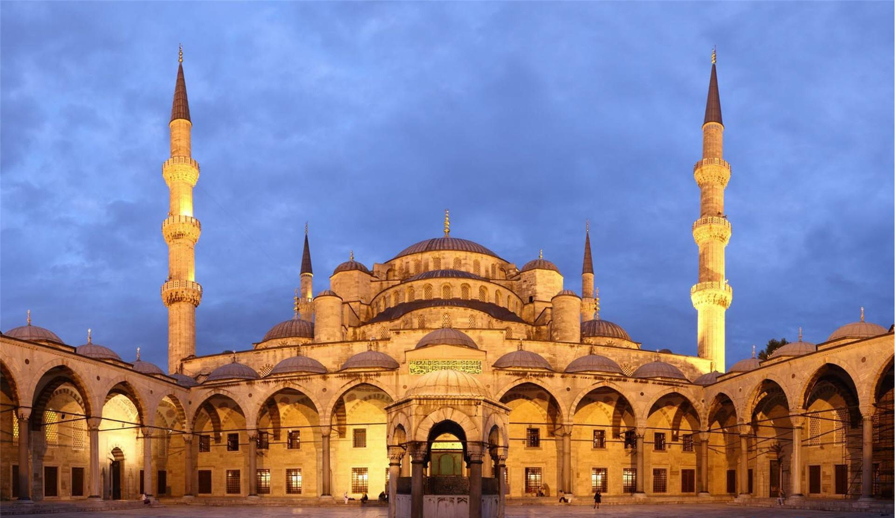

Monumentos
Principales monumentos de la ciudad.
Estambul (en turco: İstanbul, [isˈtanbuɫ]) es la ciudad más grande de Turquía y la tercera más poblada de Europa. Llamada Constantinopla en la época del Imperio Romano e Imperio Bizantino, Estambul está considerada como una de las ciudades más bellas de Europa, siendo una de las tres urbes transcontinentales que se sitúan entre Europa y Asia (las otras dos son Atyrau y Oremburgo).
